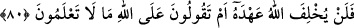

bâzılarına zâhiren intisâb etmekte; fakat bu kararlarında irâdesizlik gösterip ehl-i gaflete
meyletmekte, onların sözlerine kulak asıp onlar gibi davranmaya çalışmaktadırlar.
Böyleleri nefislerine hoşgelen şeylere koşarak, cihâd gibi ağır gelen şeylere de
istemeyerek giderler. Bunların Hak yolundaki dostluklarında ihlâs yoktur. Bu gibi
insanların elleriyle yazdıklarına da, haktan saptırmak, bâtıl inancı aşılamak ve halkı
sapıtıp yoldan çevirmek gâyesiyle kesbettikleri şeylere de yazıklar olsun. İşte hem
kendileri sapıtıp, hem de halkı sapıtanların tâ kendileri bunlardır. Mesnevî’de denmiştir
ki:
Ey Allah’ım, yüzbinlerce tuzak ve yem var,
Biz de azıksız aç gözlü kuşlar gibiyiz.
Her an tuzağa düşüp avlanmışız;
Her birimiz doğan ve anka kuşu olabilsek, o da değiliz.
Gerçek sâlike gereken, vusûl yolunda Hakk’a ulaşmak, vehimden uzaklaşmak ve bâtınî
hedeflerden uzaklaşmamak için zâhirî birtakım hallere aldanmamaktır. Çünkü hakk yol,
son derece ince bir yol, derin bir göl ve uzun bir vâdîdir. İnsanların en câhili, içinin
zanla dolu olduğuna şüphe edilmeyen nefsinin sıfatlarını değiştirmekle uğraşmayan ve
yanındaki büyüklerden hallerini ıslah etmek için faydalanmayandır.
Hâris b. Esed el-Muhâsibî şöyle der: Hoş olmayan bir yönünün medhedilmesine râzı
olan bir adamın hâli, birileri tarafından “senden çıkan pislikte misk kokusu gibi güzel
bir koku vardır” diye alaya alındığı halde bundan hoşlanan adamın hâline benzer. Akıllı
insan, bu tür şeylere aldanmaz; bilakis hakîkate ulaşmak için gayret sarfeder. İnsanların,
elini öpmesiyle kibirlenen, büyüklenen, kendini dinleyenlerden büyük gören ve nefsini,
övme ve yerme ölçüsüne göre ayarlayan vâizlere yazıklar olsun. Kalbine böyle duygular
getirmeyip gönlünden takdîr edilme arzusunu atabilenlere sözümüz yok. Ölçü el öpenle
tokat atanın aynı tutulması, hattâ ve hattâ tokat atanın diğerine tercih edilmesidir.”
Bir gün bir sohbetinde Cüneyd Bağdâdî hazretleri şöyle dedi: “Ben Peygamber
(s.a.)’ın: “Allah, bu dîni fâcir kul ile de te’yîd eder.”[321] sözünü duymasaydım asla
va’z etmezdim. Çünkü ben fâcir bir kulum.”
80. İsrâîloğulları: Sayılı birkaç gün müstesnâ, bize ateş dokunmayacaktır, dediler.
De ki (onlara): Siz Allah katından bir söz mü aldınız -ki Allah sözünden caymaz-,
yoksa Allah hakkında bilmediğiniz şeyleri mi söylüyorsunuz?
Yahûdîler, birkaç günün yedi gün olduğunu söylüyorlardı. Çünkü onlar, dünyâ
hayatının 7000 sene olduğunu ve her bin seneye mukabil bir gün yanacaklarını